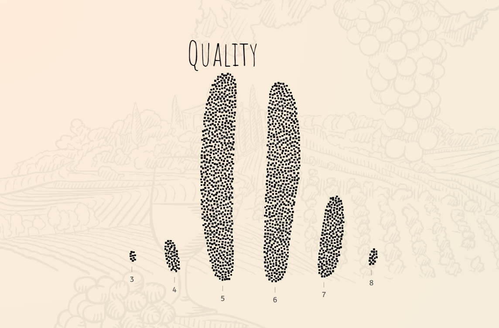
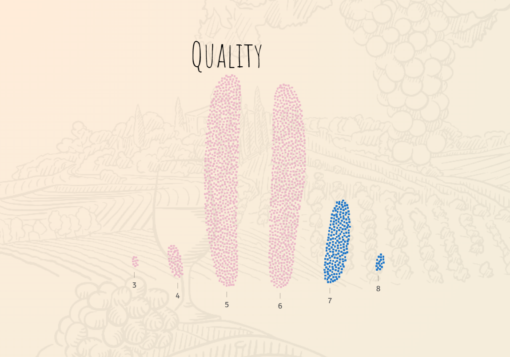

Wine & Math
A model pairing by Lars Versphols
This is a critique on the data visualisation of the pudding article named Wine & Math.
Click here to read the critique
Analysis
Wine has 3 main components:
-Alcohol
-Acids
-Sugars

Information Visualisation
Quality graph:
Structure:XY
Mark: dot
X-Quality Scale (1-10), Y: Stack
Low Quality vs High Quality:
Structure:XY
Mark: dot
X-Quality Scale (1-10), Y: Stack
Color: Blue-Above 7, Pink- Below-7
Alcohol Visualisation
Structure:XY
Mark: dot
X-Alcohol Percentage, Y: Stack
Color:Quality binary, Blue-Above 7, Pink- Below-7
Alcohol vs Quality Graph
Structure:XY
Mark: dot,line
X-Alcohol Percentage, Y: Average Quality
Color:Quality binary, Blue-Above 7, Pink- Below-7

Recreating the graph

- © Untitled
- Design: HTML5 UP